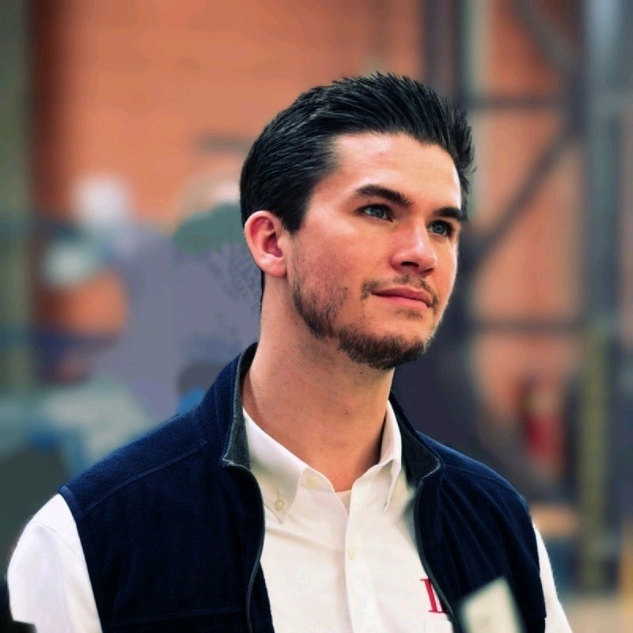

Technology leader advising C-level executives on digital transformation through human-centered design thinking. Harvard Business School (General Management). Previously President & Chief Strategy Evangelist at LambdaTest; Strategy & Analytics at Deloitte Consulting; SVP at UiPath; Global Delivery Leader at Cognizant Digital Business. AI-first mindset champion and women in technology advocate. Executive-level technical oversight for MGRC ensuring solution architecture aligns with business objectives.

Leads BayOne's AI practice, driving development and execution of AI-driven strategies for enterprise clients. Previously AI/ML Manager at Coherent Corp. integrating AI into enterprise ecosystems. Core expertise: Artificial Intelligence, Large Language Models, Deep Learning, Intelligent Process Automation. Delivered enterprise AI solutions including CI/CD pipeline automation and legacy-to-modern UI conversion. Leads BayOne's three-horizon AI enablement roadmap for MGRC. Duquesne University.
Enterprise ERP, Cloud, AI Strategy & Transformation Leader. Results-driven business systems leader with a proven track record spearheading up to $100M+ programs including end-to-end Oracle Fusion Cloud implementations. Former Oracle Corporation — led Fusion Cloud implementations at Oracle's Redwood City campus, SAFe enterprise adoption, and M&A integrations including the $5.3B Micros acquisition. Managed Oracle Fusion Cloud migrations at Albertsons. SAFe Product Manager, Agile Scrum Master, Stanford Advanced PM certified. Indian School of Business. Currently embedded at MGRC leading the NextGen transformation steering committee.